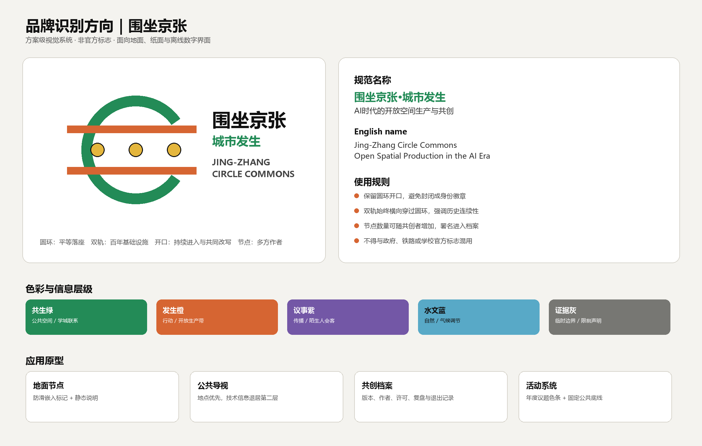
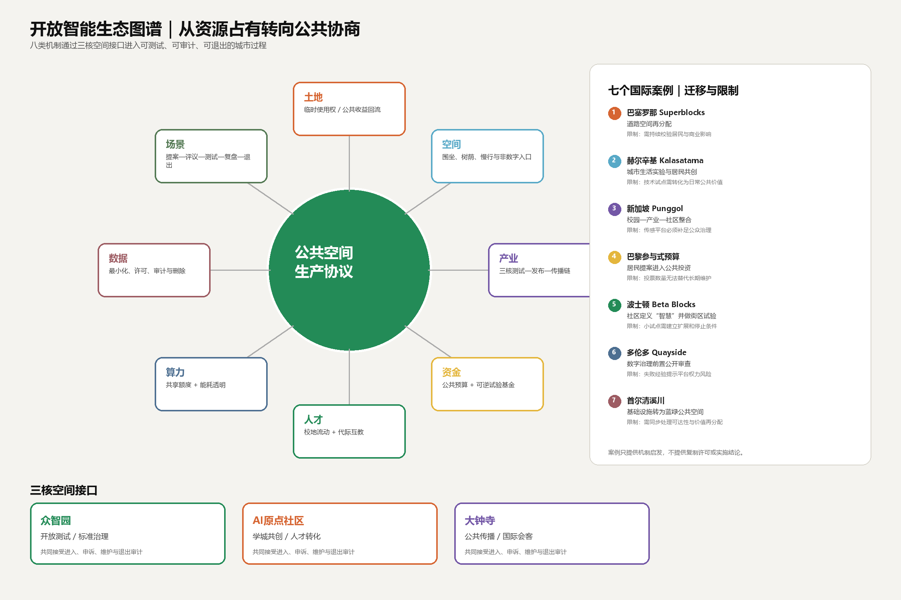
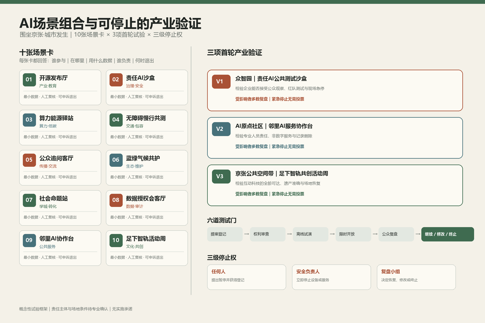
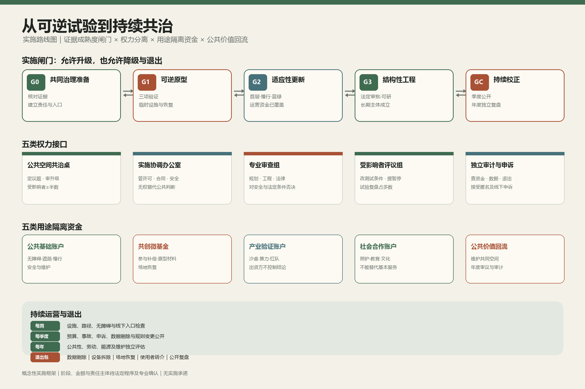

数据状态：本方案使用组织方登记的临时粗略边界，仅供设计讨论与自检，不构成法定红线、审批依据或实施承诺。
研究边界面积11.41 km²
重点片区3 核
概念绿地比12.3%
概念公共空间比7.3%
总览地图 · 三层范围 · 重点区域 · 开放空间生产

任务覆盖 · AI 场景
- AI服务始终保留非数字替代路径。
- 空间结论可回溯到几何、指标与来源。
- 轻量可逆试点先于重资产建设。
三核分工
众智园：公开测试与暂停权
原点社区：代际照护与学城共创
大钟寺：公共传播与免费停留
交通慢行 · 蓝绿公共空间 · 建筑与更新项目

十张场景卡
开源发布、责任AI沙盒、共享算力、无障碍慢行、公众追问、气候共护、社会命题、数据授权、邻里服务和足下智轨。
三个首轮试验均设置人工复核、受影响者多数复盘和紧急停止。
自检状态
核心指标来自同包 GeoJSON 复算；当前状态为 formal-review-ready。正式边界、控规、市政、权属和文保条件仍是假设清单中的待补项。
用地分区 · 混合创新街区

品牌识别 · 开放圆环与百年双轨

国际案例 · 八类生态机制

十张场景卡 · 三项产业验证

实施闸门 · 共同治理与资金回流

SEATING JUSTICE / EQUAL RIGHT TO SIT
坐的正义 · 平等落座权
AI城市的公共基础设施同时包括算力、速度与让陌生人、邻居、不同职业及不同身体条件的人免费坐下、面对面说话、彼此理解、安慰、鼓励和鼓掌的空间。
谁能坐下？
不以消费、身份、身体能力、年龄、设备或算法评分决定座位资格。
六种坐法
掌声圆环 · 并肩照护椅 · 无门槛长桌 · 安慰角 · 修理咖啡桌 · 城市议事阶。
AI 的边界
只做自愿翻译、字幕和议题归纳；不做人脸识别、情绪推断或社交信用。
设计状态：供专业团队和公众共同深化的概念建议，具体位置、数量与尺度待官方数据和共创验证。
HUMAN · NATURE · SLOW CITY
把AI藏进服务，把人还给城市
欢迎所有人来到这里。地上以树荫、亲水、慢行、面对面交流和校园—社会融合为主；机械设施与无意义标识退出视觉中心。AI在后台提供自愿、可退出、可人工接管的服务。
自然第一界面
连续遮荫、雨水花园、可维护调蓄、气候避难与从建筑走向户外的开放首层。
足下智轨
动力之轨 · 信号之轨 · 共创之轨。可踩、可触、轮椅可通过，不制造新的权力高度。
学城无界环
分时、分区、可管理地连接学校、社区和社会课堂，同时完整保留校园安全边界。
代际伙伴
青年与老人互相学习：技术陪伴与生活经验双向流动，不把老人当成需要被技术改造的人。
地下物流：仅作为低速、分区、可人工接管的条件性研究方向，须完成地质、管线、消防、防洪、疏散、成本及维护论证。